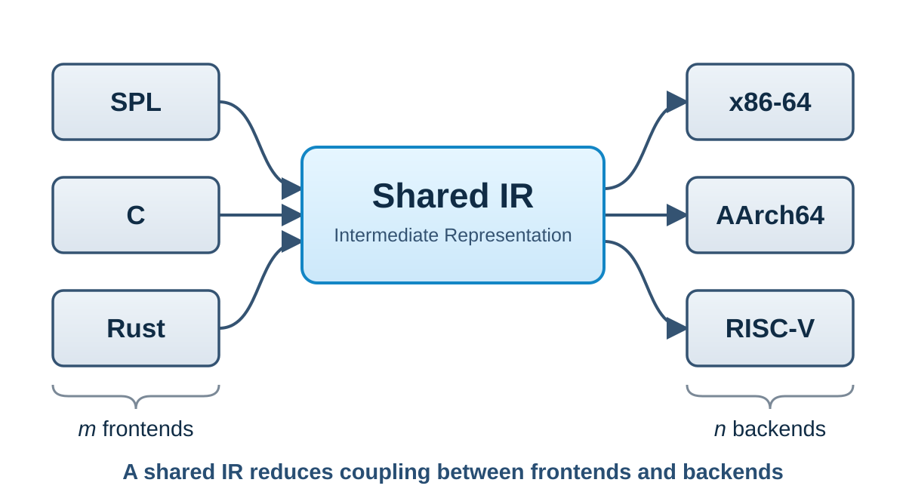

Week 10 — From Semantics to LLVM IR¶
Last week, we learned to describe what expressions mean: an expression may designate an object's storage location or produce a value. Assignment changes an object's state, and later computations can read the updated value.
This week, we take the next step: once a compiler understands a source program, how can it express that behavior in code that can be compiled further and eventually executed? We will use LLVM IR to explore this question.
The following SPL program will be our running example. It calculates the final price of an order by multiplying the unit price by the quantity, adding a delivery fee, and subtracting a discount.
int finalPrice(int unitPrice, int quantity) {
int amount;
amount = unitPrice * quantity;
amount = amount + 6;
amount = amount - 2;
return amount;
}
int main() {
return finalPrice(5, 3);
}
We know that main ultimately returns 19. Our task is to have the compiler generate a representation that preserves this behavior.
1. Why Introduce an Intermediate Representation?¶
Suppose we want to support m source languages and n target architectures, such as x86-64, AArch64, and RISC-V. If we implement a separate translation from every source language to every target, we may need to maintain roughly m × n combinations.
Instead, all frontends can generate a shared intermediate representation (IR), which different backends then translate into target machine code. This lets us organize the compiler infrastructure around m frontends and n backends:

A shared IR reduces the coupling between frontends and backends.
In this course, we use LLVM IR. Our job is to translate SPL programs, after parsing and semantic checking, into LLVM IR. The LLVM toolchain then handles machine code generation.
The question is now more concrete: how do we express SPL arithmetic, assignment, and return statements in LLVM IR?
2. Start with a Simple Function¶
The order calculation begins with unitPrice * quantity. Let us isolate that step in a function with no mutable local variables.
SPL source:
Complete LLVM IR:
define i32 @product(i32 %unitPrice, i32 %quantity) {
entry:
%result = mul i32 %unitPrice, %quantity
ret i32 %result
}
2.1 Function Definitions: The Overall Structure¶
Both versions define the same product function. LLVM IR also has function names, parameters, bodies, and return values; it simply requires types and computations to be written more explicitly.
From this example, we can outline the usual form of a function definition. For now, we omit optional details such as function attributes:
define <return-type> @<function-name>(<param-type1> %<param-name1>, <param-type2> %<param-name2>, ...) {
<block-label>:
<instruction1>
...
<terminator>
}
Here, <...> marks a placeholder to replace, rather than literal LLVM IR syntax. The ellipsis ... indicates parts that may be omitted or repeated. A function with no parameters can be written as @f(), and a function body must contain at least one basic block.
defineintroduces a function definition. The type before@, such asi32, is its return type.@function-nameis the function's global name. Parameters are usually written as a type followed by a local name beginning with%, separated by commas.- The braces
{ ... }contain the function's basic blocks. Each block ends with a terminator instruction. entry:is a basic block label, marking where execution of that block begins.
Substituting the details of our function gives define i32 @product(i32 %unitPrice, i32 %quantity), with entry: as its basic block label.
| LLVM IR | Meaning |
|---|---|
define i32 @product(...) |
Define a function that returns a 32-bit integer. |
i32 %unitPrice |
A 32-bit integer parameter named %unitPrice. |
entry: |
A label marking the entry to a basic block in the function. |
%result = mul i32 %unitPrice, %quantity |
Multiply two integers and name the result. |
ret i32 %result |
Return the computed value. |
Two instructions are worth introducing here:
retends execution of the current function and returns the specified value to its caller.callinvokes another function. We will examine it in the complete program later.
In particular, ret does not jump to the next basic block in the current function. When a called function executes ret, its caller resumes just after the function call instruction.
For now, think of basic blocks as the units that organize instructions within a function. We will explore their structure using a concrete program later.
2.2 Integer Arithmetic: Opcodes, Types, and Operands¶
There is no need to memorize a large instruction set yet. Understanding mul gives us a pattern we can apply to other operations.
For example, the source expression
can be represented by a single LLVM IR instruction:
The binary integer operations we use this week share the following form:
iN is a schematic integer type. Replace N with a bit width when writing actual IR, as in i32 or i64; you cannot write iN literally.
mulis the opcode: it tells LLVM to perform multiplication.i32is the operands' integer type, meaning a 32-bit integer.%unitPriceand%quantityare the two operands. Integer constants of the appropriate type can also be used.%resultnames the value produced by this computation; naming a result does not allocate memory.
Common SPL integer operations have direct LLVM IR counterparts:
| SPL expression | LLVM IR opcode | Operation |
|---|---|---|
a + b |
add |
Integer addition |
a - b |
sub |
Integer subtraction |
a * b |
mul |
Integer multiplication |
a / b |
sdiv |
Signed integer division |
a % b |
srem |
Signed integer remainder |
LLVM IR is strongly typed. For example, both operands of add i32 must be i32; you cannot directly add an i16 to an i32. Changing the bit width requires an explicit conversion instruction.
2.3 Types and Values: The Terms We Need to Read IR¶
The number in an integer type such as i32 specifies its bit width. The types i1, i8, i16, i32, and i64 represent 1-, 8-, 16-, 32-, and 64-bit integers, respectively. In this handout, SPL's int corresponds to i32.
A type tells us how to interpret a value and which instructions can use it.
In LLVM IR, a computation can produce a value for later instructions to use. For example:
Here, %product is the value produced by multiplication, %total is the value produced by addition, and ret uses %total as the return value.
Neither %product nor %total has to correspond to a source variable. They simply name computation results in LLVM IR.
LLVM IR uses @ for global names, such as functions and global variables, and % for names such as local values.
Keep this important property in mind: the values produced by ordinary computation instructions have their own names, which later instructions can use repeatedly. As we try to represent mutable source variables, we will see why this matters.
3. Why Can't We Give Each Source Variable a Single IR Value Name?¶
Return to amount in the order program. It is updated several times rather than computed just once.
SPL source excerpt:
3.1 First Attempt: Repeated Assignment to %amount¶
If we carry source-language assignment directly into IR, we might write the following:
Invalid LLVM IR attempt, deliberately written so that it cannot compile:
%amount = mul i32 %unitPrice, %quantity
%amount = add i32 %amount, 6
%amount = sub i32 %amount, 2
ret i32 %amount
The problem is that the same %amount is assigned repeatedly. LLVM IR does not allow different instructions to define the same SSA name. Why impose this rule?
3.2 Static Single Assignment: Define Each Name Once¶
LLVM IR uses static single assignment (SSA) form for values produced by instructions.
“Single assignment” means that each SSA name is defined at only one place in the static IR. It can be used repeatedly afterward, but another instruction cannot redefine it.
We need to distinguish source variables, assignments to those variables, and SSA values in LLVM IR:
- SPL's
int amount;declares a local variable namedamount. - SPL's
amount = amount + 6;reassigns an existing variable, changing the current value stored in that object. - LLVM IR's
%v2 = add i32 %v1, 6defines the addition result as a new SSA value,%v2. That name may be used repeatedly afterward, but another instruction cannot redefine it.
“Static” refers to definition sites in the program text. It does not limit how often a function can execute. Each call can execute the same instruction again and compute a new result; what is forbidden is writing another assignment to the same SSA name in the IR text.
To see why this form is useful, consider a valid translation of the same SPL source:
Valid LLVM IR using distinct SSA names:
define i32 @finalPrice(i32 %unitPrice, i32 %quantity) {
entry:
%amount1 = mul i32 %unitPrice, %quantity
%amount2 = add i32 %amount1, 6
%amount3 = sub i32 %amount2, 2
ret i32 %amount3
}
Although all three names originate from the source variable amount, they represent values obtained at three different stages:
| Point in the source program | What amount holds |
Corresponding IR value |
|---|---|---|
| After multiplying unit price by quantity | Cost of the items | %amount1 |
| After adding the delivery fee | Item cost + 6 | %amount2 |
| After subtracting the discount | Final price | %amount3 |
LLVM IR represents the current value of one source variable at different program points using several distinct SSA values. A source variable can be assigned repeatedly, but each assignment in a direct SSA representation produces a new value.
The dependencies between those values are explicit:
Each SSA value has a clear definition site and clear uses. This makes data dependencies easier to analyze and supports optimizations such as constant propagation and dead code elimination.
SSA restricts the definitions of LLVM IR values; it does not prohibit memory updates. As we will see, multiple store instructions can modify the same memory location while still satisfying SSA rules.
4. Two Strategies for Representing Variables¶
We have already seen one solution: whenever a source variable is reassigned, generate a new SSA value and update the value currently associated with that variable. This works for sequential programs.
There is another approach: can a mutable source variable keep the same storage location, with each assignment changing only the contents of that location?
It can. This gives us a second common strategy: managing mutable variables with alloca, store, and load.
4.1 Represent Variables Directly with SSA Values¶
Recall the earlier example:
%amount1 = mul i32 %unitPrice, %quantity
%amount2 = add i32 %amount1, 6
%amount3 = sub i32 %amount2, 2
Here, the source variable amount corresponds to its latest SSA value rather than a fixed memory address. A code generator could maintain a variable mapping like this:
| Source variable | Current SSA value |
|---|---|
amount, after the first assignment |
%amount1 |
amount, after the second assignment |
%amount2 |
amount, after the third assignment |
%amount3 |
Each assignment produces a new SSA value and updates the mapping. This table illustrates one possible implementation of the code generator; LLVM IR does not require such a table as part of its syntax.
This strategy has several useful properties:
- Ordinary scalar variables need no additional memory allocation.
- Reading and updating variables requires no
loadorstoreinstructions. - Computation results can be passed directly to later instructions.
- Data dependencies are explicit, helping later analysis and optimization.
It also asks more of the code generator. Our example has a single execution path, so determining a variable's current value is easy. With conditional branches, different paths may produce different values. With loops, values may also pass between iterations. Simply updating a variable mapping is no longer enough in those cases. We will address them when we study control flow.
4.2 Represent Variables with alloca, store, and load¶
Alternatively, we can keep amount associated with the same storage location and change its contents on each assignment. The instructions alloca, store, and load support exactly this approach.
Step 1: Allocate storage with alloca.
SPL source:
Corresponding LLVM IR:
The general form is:
Here, <object-type> is the type of object to allocate, such as i32 or [3 x i32]. It is not the type of the value returned by alloca.
alloca i32 allocates enough stack memory for an i32 in the current function and returns its address. Therefore:
%amount_addrhas typeptr: it represents an address rather than ani32integer.%amount_addrreceives the address fromallocaonly once.- The contents of the memory it points to can be modified repeatedly afterward.
- Allocation does not initialize the object. Newly allocated storage cannot be treated as if it already contained a valid integer.
ptr is the LLVM IR type used for memory addresses. SPL does not need C-style pointer syntax for LLVM IR to use addresses internally.
The key distinction is that an SSA name cannot be redefined, but the contents of the memory it points to can change repeatedly.
alloca can allocate local arrays as well as individual integers. For example:
SPL source:
Corresponding LLVM IR fragment:
[3 x i32] is an array type containing three i32 elements. This instruction allocates storage for the whole array, and the returned address %values_addr still has type ptr.
Step 2: Write a value with store.
SPL source:
LLVM IR fragment, assuming %amount_addr = alloca i32 has already been generated:
We first compute %product, then write that i32 value into the storage pointed to by %amount_addr.
The general form of store is:
For example:
The first operand is the integer value to write, and the second is the destination address. There is no %result-name = part, because store produces no computation result for later instructions to reference. Its effect is to write memory.
A store changes the contents of the memory pointed to by %amount_addr; it does not redefine %amount_addr.
Step 3: Read the current value with load.
SPL source:
The same variable name plays two roles in this assignment. On the right, we need its current value; on the left, we need the destination for the write. This connects directly to Week 9's discussion of lvalues, lvalue conversion, and the side effect of assignment.
LLVM IR fragment:
The general form of a memory read is:
Here:
load i32, ptr %amount_addrreads ani32from the address and defines the value as a new SSA value,%old.add i32 %old, 6uses that integer in an addition and produces a new SSA value,%withFee.store i32 %withFee, ptr %amount_addrwrites the new value back to the same memory location.
Unlike store, load produces a new value, so we give it a new name on the left.
Notice that %old is the integer obtained by one particular read. If the memory contents change later, %old does not change with them.
| Name or object | What it represents | Can it change? |
|---|---|---|
%amount_addr |
A memory address | The SSA name cannot be redefined. |
%old |
The integer obtained by one read | The SSA name cannot be redefined. |
%withFee |
The integer produced by one addition | The SSA name cannot be redefined. |
Memory pointed to by %amount_addr |
Storage holding the current value of amount |
Repeated store instructions can modify it. |
Why Does This Still Satisfy SSA?
Each load and arithmetic operation produces a new SSA value. Each store changes memory state without reassigning an existing SSA name.
Repeated writes to the same memory location therefore still satisfy LLVM IR's SSA requirements.
4.3 Comparing the Two Strategies¶
We now have two correct ways to represent mutable source variables. With direct SSA values, a source variable corresponds to its latest computation result. With a memory representation, it keeps a fixed storage location, whose current value is read and updated through memory operations.
| Aspect | Direct SSA values | Memory representation |
|---|---|---|
| What a variable corresponds to | Its current SSA value | A fixed memory address |
| Assignment | Produce a new SSA value and update the mapping. | Use store. |
| Reading a variable | Use its current value directly. | Use load. |
| Variable management | Track the variable's current value. | Track the variable's address. |
| Additional memory access | No extra reads or writes for variable storage. | Requires the corresponding load and store instructions. |
| Code generation | Straightforward for sequential computations; requires extra handling for complex control flow. | Relatively uniform rules for reading and updating mutable variables. |
| Data dependencies | Explicit in the uses of values. | Some dependencies are expressed through memory reads and writes. |
If memory operations provide a uniform way to manage mutable variables, why use direct SSA values at all?
Each strategy has its uses. Direct SSA values avoid extra memory accesses and make dependencies between computation results explicit, so they are well suited to representing computation directly. The generator must, however, track each variable's current value and handle values produced along different execution paths when control flow becomes more complex.
With a memory representation, the generator can use one set of rules for mutable local variables:
- Allocate storage when a variable is declared.
- Write to its address on assignment.
- Read from its address when its value is needed.
The address associated with a variable stays the same after each assignment, simplifying variable management. The tradeoff is that this may introduce extra memory operations.
Neither strategy is universally better. They reflect different choices about the complexity of the code generator and the form of the IR it produces.
This raises a practical question: does a real compiler keep all those alloca, load, and store instructions?
Not necessarily. LLVM provides the mem2reg (Memory to Register) optimization pass, which promotes eligible local memory variables to SSA values. A frontend can first generate memory operations using the simpler strategy, then let LLVM convert suitable variables into direct SSA values.
When different execution paths produce different values, this conversion may introduce phi instructions. Using a memory representation still satisfies SSA; it is a frontend strategy that makes code generation for mutable variables easier.
In Week 12, when we study control flow, we will explore how values from different execution paths merge and why phi instructions appear in LLVM IR.
5. The Complete Program: Two LLVM IR Translations¶
Let us return to the opening SPL program and put the pieces together.
5.1 Complete LLVM IR Using a Memory Representation¶
SPL source:
int finalPrice(int unitPrice, int quantity) {
int amount;
amount = unitPrice * quantity;
amount = amount + 6;
amount = amount - 2;
return amount;
}
int main() {
return finalPrice(5, 3);
}
Using the memory strategy gives us:
define i32 @finalPrice(i32 %unitPrice, i32 %quantity) {
entry:
%amount_addr = alloca i32
%product = mul i32 %unitPrice, %quantity
store i32 %product, ptr %amount_addr
%old1 = load i32, ptr %amount_addr
%withFee = add i32 %old1, 6
store i32 %withFee, ptr %amount_addr
%old2 = load i32, ptr %amount_addr
%discounted = sub i32 %old2, 2
store i32 %discounted, ptr %amount_addr
%answer = load i32, ptr %amount_addr
ret i32 %answer
}
define i32 @main() {
entry:
%result = call i32 @finalPrice(i32 5, i32 3)
ret i32 %result
}
Here is how the main instructions correspond to the source:
| SPL code or behavior | Corresponding LLVM IR |
|---|---|
Define finalPrice |
define i32 @finalPrice(...) |
int amount; |
alloca i32 |
Compute unitPrice * quantity |
mul i32 |
Assign to amount |
store |
Use amount in a right-hand expression |
load |
amount + 6, amount - 2 |
add, sub |
return amount; |
load followed by ret |
finalPrice(5, 3) |
call i32 @finalPrice(i32 5, i32 3) |
We keep the final load to illustrate the uniform rule for reading a variable. In this particular program, the last store writes %discounted, and nothing changes the memory afterward. We could therefore return it directly:
Both forms return the same result for this program.
5.2 Complete LLVM IR Using Direct SSA Values¶
For the same SPL source, we can also represent the variable directly with SSA values, without using alloca:
define i32 @finalPrice(i32 %unitPrice, i32 %quantity) {
entry:
%amount1 = mul i32 %unitPrice, %quantity
%amount2 = add i32 %amount1, 6
%amount3 = sub i32 %amount2, 2
ret i32 %amount3
}
define i32 @main() {
entry:
%result = call i32 @finalPrice(i32 5, i32 3)
ret i32 %result
}
Comparing the two versions:
- Both correctly represent the successive assignments to
amount. - The first uses a fixed address, updating the variable through
loadandstore. - The second uses distinct SSA values for the variable's current value at different program points.
- Both satisfy LLVM IR's SSA rules.
The compiler's task is to preserve the source program's semantics, rather than reproduce every source variable and assignment literally.
5.3 Function Calls and Returns: call and ret¶
The complete program brings call and ret together. Start with the call:
This instruction:
- Calls the function named
finalPrice. - Passes two
i32arguments,5and3. - Receives an
i32return value from the function. - Defines that result as a new SSA value,
%result.
A function call with a return value therefore has this general form:
The following instruction returns %result from the current function:
Where does ret return to? Consider main calling finalPrice:
At the call, execution enters finalPrice. When that function executes
it finishes its execution and passes the return value back to the caller. Execution then resumes in main, immediately after the call instruction. Returning from a function takes us back to the caller after the call, rather than to another basic block in the function that is returning.
For a function with no return value, LLVM IR uses void. The call is written as:
and the return as:
Follow the current project's grammar specification for the return types supported by SPL. We introduce void here to show the full range of LLVM IR call and return forms.
6. Basic Blocks: Organizing Instructions Within a Function¶
Both complete programs contain a block of this form:
Here, entry: labels a basic block, rather than naming a function.
Think of a basic block as a sequence of instructions that executes in order from its entry, with no control-flow transfer midway through, ending in a terminator instruction. An LLVM function body consists of one or more basic blocks.
The general structure is:
Our order program performs its computations in a fixed sequence and then returns, so each function needs only one entry block. In finalPrice:
- The block begins at
entry:. - It executes
alloca,mul,store,load,add, and the remaining operations in order. - The final
retends both the block and the function.
One LLVM IR rule is essential: every basic block must end with a terminator instruction.
The ret instruction we have been using is one such terminator: it ends execution of the current function. LLVM IR does not allow a basic block to end without a terminator.
For this week, we only need ret. When we introduce conditional branches and loops, we will also use br to change control flow. We will cover it in Week 12.
6.1 Grouping the Instructions We Have Seen¶
Our complete program already uses several categories of LLVM IR instructions:
| Instruction category | Instructions we have seen | Role in the order program |
|---|---|---|
| Integer arithmetic | mul, add, sub |
Calculate the item cost, add the delivery fee, and subtract the discount. |
| Memory operations | alloca, store, load |
Allocate storage for a variable and write and read its current value. |
| Function calls | call |
Call finalPrice(5, 3) from main. |
| Terminators | ret |
End a block and return a result. |
This functional grouping helps us read this week's examples; it is not a complete catalog of LLVM instructions.
Keep the different kinds of syntax separate:
defineintroduces a function definition.entry:is a basic block label.i32is a type.mul,load,store, andretare instructions.
These form the structural levels of LLVM IR: functions contain basic blocks, blocks contain instructions, and instructions use typed values.
7. Practice: Observe LLVM IR with Clang¶
So far, we have learned LLVM IR through handwritten examples. To see how a real compiler generates these instructions, we will use Clang and look for the two variable representation strategies we just studied.
7.1 What Is Clang?¶
Clang is the LLVM project's compiler frontend for languages including C and C++. The clang command also acts as a compiler driver: it uses the input files and command-line options to coordinate compilation, object code generation, linking, and related steps.
We will use it to:
- Convert C source into readable LLVM IR.
- Compile and run our own
.llfiles.
Clang does not compile SPL directly as C. We use a C program that shares the syntax of our SPL example to observe how LLVM IR is generated.
7.2 Inspect LLVM IR with Compiler Explorer¶
Open Compiler Explorer, enter the following code on the left, and select a Clang compiler.
C source:
int finalPrice(int unitPrice, int quantity) {
int amount;
amount = unitPrice * quantity;
amount = amount + 6;
amount = amount - 2;
return amount;
}
int main() {
return finalPrice(5, 3);
}
Enter these Clang compiler options:
Each option has a different purpose:
| Option | Meaning | Why use it here? |
|---|---|---|
-S |
Stop after producing code in textual form. | Combined with -emit-llvm, this produces textual LLVM IR. |
-emit-llvm |
Emit LLVM IR instead of assembly for the target platform. | Show the LLVM IR we are studying in the output pane. |
-O0 |
Use optimization level 0. | Largely preserve the unoptimized code structure. |
-fno-discard-value-names |
Retain local value and parameter names where possible. | Make names such as %unitPrice easier to relate to the source. |
-S controls the output stage, while -emit-llvm controls the code representation. On its own, -S normally produces assembly for the target architecture. Together, they produce textual LLVM IR, usually stored in a .ll file.
In the generated IR on the right, look for:
Rather than connecting all computation results directly as we did in §5.2, Clang may allocate storage for the local variable amount, then read and update it with load and store. This is the memory representation strategy from §4.2.
Clang may generate different local names, attributes, and other supporting information. Its generated IR does not have to match this handout word for word. Focus on the instructions and the program behavior they represent.
7.3 Observe How Optimization Changes Variable Representation¶
Now change Clang's optimization option from:
to:
Alternatively, run this command:
Inspect the generated LLVM IR. You may find that:
- The original
allocadisappears. - Some
loadandstoreinstructions disappear. - Variables previously represented through memory accesses now use SSA values directly.
- Some computations are combined or simplified, possibly even becoming constants.
Recall that computation results in LLVM IR already use SSA form. If the compiler determines that certain local variables do not need to exist as actual memory objects, it can represent them directly with SSA values.
An important LLVM optimization pass supports this transformation: mem2reg (Memory to Register). It promotes eligible local memory variables to SSA values.
For example, memory operations such as these:
%amount_addr = alloca i32
store i32 %product, ptr %amount_addr
%old = load i32, ptr %amount_addr
%result = add i32 %old, 6
store i32 %result, ptr %amount_addr
can give way to direct use of SSA values:
This is a simplified illustration of the transformation, not a guarantee that every optimization run produces exactly this result.
mem2reg does not simply remove every alloca. It only handles local variables that meet the requirements for promotion. Objects that still need actual memory accesses may retain their memory operations.
Also, -O1 enables other optimizations besides variable promotion. The final IR may reflect constant propagation, function inlining, and simplified computations, so not every change can be attributed to mem2reg.
Why Generate a Memory Representation First and Convert It to SSA Later?
Generating explicit memory reads and writes is often simpler for a frontend. It avoids having to track the SSA value currently associated with each variable as every instruction is generated.
LLVM can then promote eligible local variables to SSA values during optimization.
This separates the complexity of code generation from later optimization. The frontend can use a simpler strategy while leaving LLVM room to improve the IR.
Alignment and Debug Information
Clang's generated LLVM IR may include an instruction such as:
Here, align 4 specifies a 4-byte alignment requirement for the memory access.
In this course, the IR you write does not need explicit align operands. You can write:
LLVM applies its rules for alignment when it is not explicitly specified. However, you must not claim an alignment that the address does not satisfy.
You may also see debug information such as !dbg. It associates IR with source locations and variables to support debugging; it is outside our current focus.
7.4 Run the Program in the Course Linux Environment¶
First, check that the compiler is installed:
--version displays Clang's version and target information; it does not compile a program.
Save the C source from §7.2 as order.c, then run:
# Convert the C source to textual LLVM IR in order-O0.ll
clang-19 -S -emit-llvm -O0 -fno-discard-value-names order.c -o order-O0.ll
# Read the generated IR; press q to exit less
less order-O0.ll
The general command structure is:
Here, order.c is the input, and -o order-O0.ll means write the output to that file. The o in -o is lowercase, for output. The O in -O0 and -O1 is uppercase, for optimization. Take care not to confuse them.
Next, save the complete LLVM IR we wrote in §5.1 as order.ll, then run:
# Compile the LLVM IR and link it into an executable named order
clang-19 order.ll -o order
# Run the program
./order
# Immediately check the previous command's exit status
echo $?
clang-19 order.ll -o order reads the existing LLVM IR, generates machine code, and links the executable. ./order runs order from the current directory, and echo $? displays the previous command's exit status.
In this example, main returns 19, so the displayed status should be:
Run echo $? immediately after ./order, without inserting another command between them.
To generate only an object file, without linking:
-c means compile to an object file without linking an executable. The resulting order.o cannot be run directly like ./order.
Finally, generate optimized LLVM IR from the same C source:
Compare order-O0.ll with order-O1.ll. Check whether alloca, load, and store remain, and whether computation results now use SSA values directly.
Different Clang and LLVM versions may produce different IR. Focus on how the representation changes after optimization, rather than expecting output identical to this handout.
7.5 In-Class Exercises¶
Exercise 1: Work with Both Strategies
In the original SPL program, change the delivery fee from 6 to 9 and the discount from 2 to 4. Predict the return value first, then update:
- The version using direct SSA values.
- The version using
alloca + load/store.
Check that both IR versions produce the same result.
Exercise 2: Understand the Memory Representation
Consider the final read and return in the memory-based version:
Try removing the final load and returning %discounted directly:
Explain why these forms have the same effect in this particular program.
Exercise 3: Observe Clang's Optimizations
Generate LLVM IR with -O0 and -O1, then answer:
- Why is it easy to observe
alloca,load, andstoreat-O0? - Why might these instructions disappear after optimization?
- Does the optimized IR still satisfy SSA rules?
8. Summary¶
We began with a question: how should a compiler represent source variables that can be assigned repeatedly when LLVM IR uses SSA? The following ideas give us an answer.
Intermediate Representation¶
- An IR connects source-language frontends with target-machine backends.
- LLVM IR represents computations using explicit types, values, and instructions.
- Functions consist of basic blocks, which contain instructions.
Static Single Assignment¶
- Each SSA value in LLVM IR is defined at only one place.
- A source variable can correspond to different SSA values at different program points.
- SSA restricts value definitions, rather than the number of assignments to a source variable.
Two Strategies for Representing Variables¶
- With direct SSA values, each assignment produces a new value and updates the value currently associated with the variable.
- With a memory representation,
allocaallocates storage,storeupdates its contents, andloadreads its current value. - Both strategies satisfy LLVM IR's SSA rules.
- Their main difference lies in how the code generator manages mutable variables.
LLVM Optimization¶
- LLVM's
mem2regpass can promote eligible local memory variables to SSA values. - A memory representation can simplify frontend code generation.
- Direct SSA values express computation dependencies more explicitly.
- Optimization can eliminate unnecessary memory accesses and further simplify computations.
Functions and Basic Blocks¶
defineintroduces a function definition.callinvokes a function.retends the current function and returns to its caller.- A basic block organizes a sequence of instructions.
- Every basic block must end with a terminator instruction.
LLVM IR does not require each source variable to correspond to one fixed SSA value. A compiler can represent its current value through successive SSA values, or manage it through a fixed memory address and explicit reads and writes. Each strategy has its uses, and LLVM's optimizer can convert suitable memory representations into SSA values.
Next, we will study control flow in LLVM IR: conditional branches, loops, and the merging of values from different execution paths.
Appendix: More LLVM IR Basics for the SPL Project¶
Use these sections as a reference when needed; they are outside this week's main walkthrough. Each example starts with source code and then shows the corresponding LLVM IR. Examples that use syntax outside the current SPL language are explicitly labeled as C.
A. Integer Division and Remainder: sdiv and srem¶
SPL source:
Corresponding LLVM IR:
define i32 @quotient(i32 %a, i32 %b) {
entry:
%result = sdiv i32 %a, %b
ret i32 %result
}
define i32 @remainder(i32 %a, i32 %b) {
entry:
%result = srem i32 %a, %b
ret i32 %result
}
sdiv performs signed integer division, and srem computes the signed remainder. Their counterparts udiv and urem interpret the operands as unsigned integers. With negative operands, this difference affects the result, so the instructions are not interchangeable. Division by zero must not be treated as producing an ordinary valid result either.
B. Unary Minus: Another Use for sub¶
SPL source:
Corresponding LLVM IR:
LLVM IR does not need a dedicated neg instruction for simple integer negation: 0 - x expresses the corresponding fixed-width operation. Unary plus on an ordinary integer value generally needs no additional arithmetic instruction.
C. Function Calls: call¶
SPL source:
Corresponding LLVM IR:
define i32 @square(i32 %x) {
entry:
%result = mul i32 %x, %x
ret i32 %result
}
define i32 @useSquare(i32 %y) {
entry:
%s = call i32 @square(i32 %y)
%answer = add i32 %s, 1
ret i32 %answer
}
call i32 @square(i32 %y) calls square with one i32 argument and produces an i32 return value.
Notice the distinction between parameter names in a function definition and argument values at a call site. Function names use @; local parameters and values use %.
Another common construct is a function declaration without a body in the current module. For example, a source file may call a function defined elsewhere.
C source illustrating a function declaration:
Corresponding LLVM IR:
declare i32 @externalAdd(i32, i32)
define i32 @useExternal(i32 %n) {
entry:
%result = call i32 @externalAdd(i32 %n, i32 1)
ret i32 %result
}
define introduces a function definition, including its body. declare introduces a function declaration, with a signature but no body. The declaration above follows this pattern:
Parameter names may be omitted in a declaration, but parameter types must still be provided. This IR can be compiled into an object file. To link an executable, you must also provide an implementation of externalAdd and an appropriate entry point.
D. Integer Comparisons: icmp and i1¶
LLVM IR must also represent relational operations. The following C source illustrates a function returning an integer 0 or 1. For the result types of relational expressions in SPL, follow the semantic specification for the current course project.
C source:
Corresponding LLVM IR:
define i32 @isGreater(i32 %a, i32 %b) {
entry:
%cond = icmp sgt i32 %a, %b
%result = zext i1 %cond to i32
ret i32 %result
}
icmp compares integers and produces an i1 result. Its general form is:
The <predicate> specifies the comparison:
| Predicate | Meaning |
|---|---|
eq |
The first operand equals the second. |
ne |
The first operand does not equal the second. |
sgt |
The first operand is greater than the second, using a signed comparison. |
sge |
The first operand is greater than or equal to the second, using a signed comparison. |
slt |
The first operand is less than the second, using a signed comparison. |
sle |
The first operand is less than or equal to the second, using a signed comparison. |
For a scalar integer comparison, the result is i1, not the i32 type of the input operands.
If the function must return an i32 containing 0 or 1, explicitly extend the i1 with zext, as shown above. LLVM does not perform this type conversion automatically.
E. Global Variables: global and Global Addresses¶
SPL source:
Corresponding LLVM IR, choosing an initial global value of 0:
@counter = global i32 0
define i32 @increment() {
entry:
%old = load i32, ptr @counter
%new = add i32 %old, 1
store i32 %new, ptr @counter
ret i32 %new
}
For an ordinary global variable, start with this general form:
An example is @counter = global i32 0. This differs from a define function definition and is not a local alloca instruction.
@counter represents the address of a global object, whereas a local alloca allocates storage during function execution. The addresses come from different sources, but both use the same load/store forms for reads and writes. We explicitly choose an initial value of 0 here; follow the SPL specification for the project's global initialization semantics.
LLVM IR also provides zeroinitializer to represent a zero-initialized value. For example:
For the integer global above, this has the same effect as initializing it to 0.
F. Integer Type Conversions: sext, zext, and trunc¶
C source using short and unsigned short, declaration types not directly available in the current SPL language:
int signedWiden(short x) {
return x;
}
int unsignedWiden(unsigned short x) {
return x;
}
short narrow(int x) {
return (short)x;
}
Corresponding LLVM IR, assuming a 16-bit short and a 32-bit int:
define i32 @signedWiden(i16 %x) {
entry:
%result = sext i16 %x to i32
ret i32 %result
}
define i32 @unsignedWiden(i16 %x) {
entry:
%result = zext i16 %x to i32
ret i32 %result
}
define i16 @narrow(i32 %x) {
entry:
%result = trunc i32 %x to i16
ret i16 %result
}
These conversion instructions share a common form:
The opcode may be sext, zext, or trunc:
sextperforms sign extension.zextfills the added high-order bits with zeros.truncdiscards high-order bits.
These instructions show how explicit LLVM IR is about integer widths: do not expect implicit conversions between different widths.
G. void: Functions Without a Return Value¶
C source, since the current SPL function type specification does not include a void return type:
Corresponding LLVM IR:
define void @doNothing() {
entry:
ret void
}
define i32 @main() {
entry:
call void @doNothing()
ret i32 0
}
void is a special LLVM IR type indicating the absence of a return value. call void produces no return value to receive, and ret void carries no value.
H. Syntax Quick Reference¶
This table collects the general forms already introduced through source and IR examples this week. Use it as an index to the main text and appendix. Angle brackets still mark placeholders; these patterns cannot themselves be compiled as .ll files.
| Purpose | Common form, omitting optional attributes | First complete example |
|---|---|---|
| Function definition | define <return-type> @<function-name>(<type> %<parameter>, ...) { ... } |
§2.1 |
| Binary integer operation | %r = <add/sub/mul/sdiv/srem> iN <x>, <y> |
§2.2, Appendix A |
| Allocate local storage | %p = alloca <object-type> |
§4.2 |
| Write memory | store <type> <value>, ptr <address> |
§4.2 |
| Read memory | %v = load <type>, ptr <address> |
§4.2 |
| Call a function with a return value | %r = call <return-type> @<function-name>(<type> <argument>, ...) |
§5.3, Appendix C |
| Return from a function | ret <type> <value> or ret void |
§2.1, Appendix G |
| Function declaration | declare <return-type> @<function-name>(<param-type>, ...) |
Appendix C |
| Integer comparison | %r = icmp <predicate> <type> <x>, <y> |
Appendix D |
| Global variable | @<name> = global <type> <initial-value> |
Appendix E |
| Integer type conversion | %r = <sext/zext/trunc> <source-type> <value> to <destination-type> |
Appendix F |
Remember that not every instruction has the form %result = .... For example, store and ret produce no new result value. Also, define, declare, and global are not ordinary computation instructions. Read each construct in terms of its result, operands, and type requirements.
References¶
- LLVM Language Reference Manual: Formal definitions of IR syntax, types, instructions, and memory operations.
- LLVM Tutorial — Mutable Variables: The relationship between mutable variables, SSA, and
alloca. - Clang Command Line Reference: Command-line options such as
-S,-emit-llvm,-c, and-o. - LLVM Passes — Promote Memory to Register: The
mem2regoptimization pass. - Compiler Explorer: Compare source code with the LLVM IR generated by Clang.